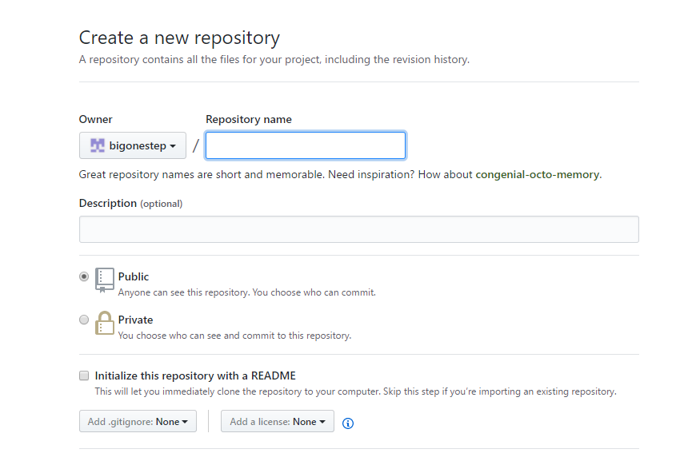
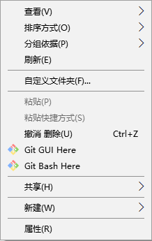

用hexo+github建立自己的博客
最近在学前端，写了一些小网页想放到网上浏览，满足一下虚荣心，在找方法的时候，无意中发现了hexo可以搭建个人博客，还能私人定制，兴趣大增，赶紧跟着教程搭建了一个，下面就把自己搭建的过程分享一下，也算是做个笔记。
准备工作
安装nede.js
hexo基于node.js，所以你首先需要安装nede.js。
nede.js的官网 https://nodejs.org/en/

有两个版本，6.11.1和8.0.0，8.0.0为node.js刚推出不久的新版本，可能有很多bug，所以推荐下载6.11.1版本。下载好了之后，打开安装一路next（默认为C盘，可以更改路径。）安装完成后默认是自动添加到环境变量的。打开命令行（Ctrl+R，输入cmd回车），输入：
nede --version
出现版本号，说明安装成功。
申请github账号
github官网：https://github.com/
申请之后Github会给你用的邮箱发一个确认信，一定要确认，不然后面后无法进行。
下载安装git
git官网：https://git-scm.com/
下载好了以后，打开安装，安装过程也十分简单。需要注意的是，环境变量不是自动配置的，而是需要自己选择，建议在安装的过程中勾选上这个选项。
安装教程：http://jingyan.baidu.com/album/90895e0fb3495f64ed6b0b50.html?picindex=4
当然安装完之后，也需要是否安装正确，同样打开命令行，输入：
git --version
如果显示版本，说明安装成功。
以上为准备工作。下面就开始搭建博客。
搭建博客
配置Github
- 用申请好的账户登录之后，点击New repository。

上面的Repository neme一定要填你的GitHub用户名 ，不然会出现错误。其他默认。成功后会出来一个界面。
- 开启gh-pages功能
点击界面右侧的Settings，你会打开Settings的页面，向下拖动，看到Github Pages之后，点击Automomatic page generator，Github则会为你创建一个gh-pages的页面。
这个页面之后会成为你的博客页面，如果没有错误的话，大概十分钟左右，yourname.github.io这个页面就可以访问了。只不过这时候里面还没有任何东西（404），因为你还没搭建博客嘛。
如果页面可以访问了，说明github的配置完成了。
安装hexo
创建一个文件夹，命名为hexo。这个文件夹之后放的是你的博客源文件。点击鼠标右键，然后点击。

在命令行中输入Git B，输入：
npm install hexo-cli -g
可能会出现一个警告不过没关系。然后你会看到出现很多字。等到停了之后，在输入：
hexo -v
出现版本，说明hexo安装OK了。
初始化hexo
接着上面输入：
hexo init
然后输入：
npm install
这步代码的含义为，安装所需的组件。
然后输入：
hexo g
这步代码为生产hexo页面。
然后输入：
hexo s
会出现：INFO Hexo is running at http://0.0.0.0:4000/. Press Ctrl+C to stop.
这句代码的含义为：本地预览hexo网页。在浏览器中打开http://localhost:4000/,你所看大的网页就是你的博客。
以上为hexo的本地初始化。
发布hexo
在你的hexo文件夹里面找到_config.yml文件，这个文件为博客的全局配置文件。由于编码问题，建议你用Notepad++软件打开。下滑到最后面，添加：
注意.yml文件里面配置项，每个“：”后面都要有一个空格。
保存退出。
此时点右键打开Git Bash here在输入：
hexo g
hexo d
你就可以登陆：yourname.github.hub.io，看到的博客啦。注意：在执行hexo d之后会要求你输入github的账号密码，输入即可。
以上你的博客建议完成了。下一篇博客会教大家如何绑定自己的域名，如何更换主题以及一些常用的配置。